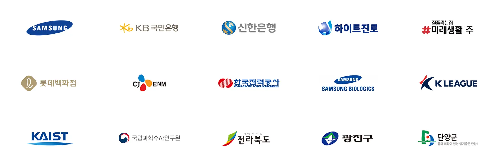

01 / 03


최근 문의현황
정부출연연구기관 · 대학 · 기술기업이 선택한
대전 카탈로그 · 브로슈어 · 리플렛 제작 인쇄 | 퍼스트디자인 대전지사

편집 디자인 경력년+
납품한 프로젝트+
재의뢰 · 소개 비율%
정부지원사업 · 바우처 수행+
대전 업종별 제작 가이드
어떤 자료부터 만들어야 할지,
업종별로 먼저 정리해 드립니다
정부출연연 · 대학 · 연구소기업
연구성과집, 기관 브로슈어, 개소식·세미나 리플렛, 학회 포스터. 도표와 각주가 많은 원고를 읽는 순서로 다시 짭니다.
대덕연구단지 · 유성구바이오 · 제약 · 의료기기
영문 제품 카탈로그, 임상·기전 브로슈어, 학회 부스 리플렛. 번역과 조판을 한 팀에서 처리합니다.
대덕테크노밸리 · 둔곡항공우주 · 국방 · ICT
기술 브로슈어, 입찰·과제 제안서, 시스템 구성도. 보안이 필요한 자료는 비밀유지계약 후 진행합니다.
유성 · 계룡 · 세종정부청사 · 공공기관 · 지자체
정책 소식지, 백서, 캠페인 포스터, 행사 팜플렛. 발간 규정과 심의 일정에 맞춰 제작합니다.
정부대전청사 · 세종청사제조 · 산업단지 기업
제품 카탈로그 리뉴얼, 전시회 리플렛, 안전 표시물. 현장 촬영부터 인쇄까지 한 번에 진행합니다.
대덕산단 · 문평동 · 신탄진연구기관부터 스타트업까지,
기술을 읽히게 만든 작업들
퍼스트디자인 대전지사가 일하는 방식
읽는 사람 기준으로 다시 씁니다
대전 인쇄 · 디자인 서비스
대전에서 찾는 인쇄물, 디자인부터 인쇄까지 한 번에
자료 접수부터 납품까지
초안을 먼저 확인받고 진행합니다
01
자료 접수
원고·도표·사진을 받아
목적과 독자를 먼저 정리합니다
02
구조 설계
목차와 페이지 플랜을 잡고
분량·판형·제본을 확정합니다
03
초안 확인
앞부분을 먼저 디자인해
방향을 확인받고 진행합니다
04
시안 · 수정
전체 시안을 제작하고
횟수 제한 없이 다듬습니다
05
감리 · 인쇄
색 교정과 인쇄 감리 후
자체 인쇄소에서 인쇄합니다
06
납품 · 파일 전달
기한에 맞춰 납품하고
원본 파일을 함께 전달합니다
대전에서 자주 받는 질문입니다
Q.정부출연연구기관이나 대학 과제의 연구성과집도 디자인·인쇄가 되나요?
네. 연구성과집·연차보고서·백서처럼 도표와 각주가 많은 자료가 대전지사의 주력 분야입니다.
원고를 받으면 목차와 페이지 플랜을 먼저 잡고, 표·그래프·도식을 다시 그려 읽는 순서대로 정리합니다. 자체 인쇄소에서 무선·양장 제본까지 진행하며, 발간등록번호와 ISBN 표기 위치도 함께 챙겨 드립니다.
원고를 받으면 목차와 페이지 플랜을 먼저 잡고, 표·그래프·도식을 다시 그려 읽는 순서대로 정리합니다. 자체 인쇄소에서 무선·양장 제본까지 진행하며, 발간등록번호와 ISBN 표기 위치도 함께 챙겨 드립니다.
Q.영문 병기나 영문판 카탈로그도 한 번에 진행되나요?
네. 퍼스트디자인은 번역 부서를 직접 운영하고 있어 번역과 조판을 같은 팀에서 처리합니다.
국문판을 기준으로 영문판 레이아웃을 다시 잡기 때문에 글자 길이 차이로 지면이 깨지는 일이 없고, 해외 학회·전시회 일정에 맞춰 두 언어를 동시에 납품할 수 있습니다.
국문판을 기준으로 영문판 레이아웃을 다시 잡기 때문에 글자 길이 차이로 지면이 깨지는 일이 없고, 해외 학회·전시회 일정에 맞춰 두 언어를 동시에 납품할 수 있습니다.
Q.100부 이하 소량 인쇄도 가능한가요?
가능합니다. 세미나·심사용 자료처럼 수량이 적은 인쇄물은 디지털 인쇄로, 500부 이상은 옵셋 인쇄로 진행해 수량별로 가장 유리한 방식을 안내드립니다.
디지털 인쇄는 판비가 없어 30부, 50부 단위의 소량도 부담 없이 제작할 수 있습니다.
디지털 인쇄는 판비가 없어 30부, 50부 단위의 소량도 부담 없이 제작할 수 있습니다.
Q.대덕연구단지나 정부대전청사 쪽으로 방문 미팅이 가능한가요?
네. 대전 전 지역과 세종·청주·공주 등 충청권은 필요한 날 바로 방문해 원고와 용지 샘플을 함께 보며 상담드립니다.
외부인 출입이 제한되는 기관은 화상 회의와 인쇄 견본 우편 발송으로 대신하고 있습니다.
외부인 출입이 제한되는 기관은 화상 회의와 인쇄 견본 우편 발송으로 대신하고 있습니다.
Q.대외비 기술 자료도 맡길 수 있나요?
네. 요청하시면 비밀유지계약을 먼저 체결하고, 프로젝트 자료는 전담팀만 접근하도록 관리합니다.
납품 후 원본 파일은 요청에 따라 반환하거나 폐기하며, 포트폴리오 공개는 사전에 동의를 받은 경우에만 합니다.
납품 후 원본 파일은 요청에 따라 반환하거나 폐기하며, 포트폴리오 공개는 사전에 동의를 받은 경우에만 합니다.
제작 중인 자료의 사양이 아직 정해지지 않았어도 괜찮습니다.
문의하기
FIRST DESIGN DAEJEON
제작물 종류와 수량만 알려주시면당일 견적과 일정을 안내드립니다
전화 상담1600-9487
상담 설문지 작성하기
대전 제작 인사이트
연구기관·바이오·공공기관 홍보물을 만들며 정리한 실무 기준입니다.